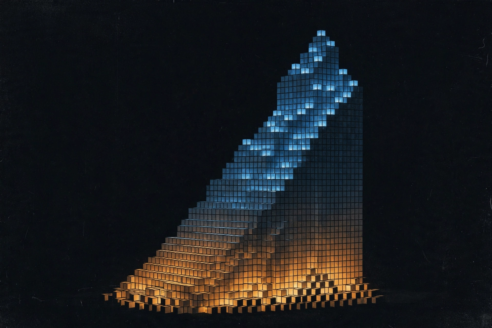

Daily Compounding Turned Me From An AI Consumer Into A Builder

For my first year or two with AI tools, I was a world-class consumer. I asked chatbots brilliant questions. I got brilliant answers. I saved them in a notes app and never looked at them again. Zero artifacts. A long list of "interesting ideas I had while lying on the couch."
I wasn't lazy. I was just consuming with a builder's posture, and posture doesn't ship anything.
The shift didn't come from a course, a prompt pack, or a big decision. It came from a smaller one: twenty minutes a day, touching the thing. Not studying AI. Making something with it, even badly.
The consumer phase was comfortable
Let me be honest about what consuming looked like. I could talk about AI for an hour — models, capabilities, which one was better at what. Friends asked me questions about it. I looked like someone who understood the technology.
But ask me what I'd made and the room went quiet. I had opinions without evidence. Knowledge without calluses. It's a strange feeling to realize you can explain a tool you have never actually used for anything real.
Most people live here indefinitely. Not because they can't build, but because consuming has a shorter feedback loop. You ask, you get an answer, dopamine. Building is slower. You ask, you try, it breaks, you fix it. The feedback loop of building looks like failure for the first month.
Twenty minutes a day changed the math
I didn't start with a goal like "become a builder." I started with four small habits, all unglamorous:
English study, 20 minutes. My English is beginner level. I worked on one small piece a day — a sentence pattern, a short paragraph. Boring. But a year of boring beats a month of ambitious every time.
Gym, four times a week. One hour, next to my school. I locked the routine for three months, September through December. No optimizing the program, no hunting for the perfect plan. Just show up and lift.
Tango basics. I dance three nights a week, and I drill the boring fundamentals — walking, posture, the embrace. The flashy moves can wait. They always can.
Building with AI, 20 minutes a day. This was the new one. Instead of asking an AI a question and saving the answer, I asked it to help me make something — and then I stayed for the messy part: testing, fixing, rewriting, publishing.
Each habit was too small to impress anyone. Together they did something no single effort could: they taught me that results come from attendance, not talent.
The things that now exist
Somewhere along the way, the sessions started producing evidence.
A working web app — a saju fortune-telling service with daily readings, five screens, a real backend. I didn't write the code with my own hands. I described what I wanted, reviewed what came back, pushed it when it was wrong, and shipped it when it worked. That's a strange sentence to write, and it's completely true: directing an AI to build something, day after day, is building. The reviews are mine. The decisions are mine. The thing works because I kept showing up to make it work.
An X article series — long-form posts with research, revision rounds, and a published piece with the next one already drafted. My first drafts were rough. My fiftieth anything won't be.
A full branding package for a tango community — visual identity, a year-long content plan, a real event in Oregon. People I dance with now see a brand I built, one twenty-minute session at a time.
None of these came from a burst of motivation. Motivation showed up on maybe ten percent of the days. The other ninety percent ran on the calendar entry.
Compounding isn't magic. It's attendance.
Everyone knows the compound interest metaphor, and honestly it's getting stale. But there's a version nobody talks about, because it doesn't sell courses: compounding only works if you deposit. Every day. Small amounts. Boring amounts.
Here's what daily deposits actually compound into:
Instincts. Around the fiftieth session of anything, you stop following the tutorial and start feeling the work. You sense the wrong sentence before you can explain why. You know the pose is off before the mirror confirms it. Instinct is just compounded attention.
Evidence. A folder of finished things is worth more than a head full of plans. When doubt arrives — and it arrives daily — you don't fight it with affirmations. You fight it with the folder.
A different identity. This is the real product. After a few months of daily building, "consumer" stopped fitting. Not because I became an expert — I'm still a beginner at most of this — but because my days now contain the act. Builders aren't people with skills. Builders are people who build. The skill is a lagging indicator.
The honest part
Let me not romanticize this. I am not a programmer. My English is still basic. My tango still needs work. The gap between what I can do and what I want to do is enormous, and daily deposits haven't closed it — they've just made it visible, which is arguably worse.
But visibility is a feature. When you're a consumer, the gap is invisible, so it's painless. When you're a builder, the gap is the whole view, so it hurts. That pain is the price of admission, and it's worth paying, because the only way to cross a gap is to be looking at it.
One line for you
You don't need a bigger goal. You need a smaller deposit.
Twenty minutes. One thing. Today. Then again tomorrow. Not to become extraordinary — just to stop being only a consumer of other people's work.
The difference between a consumer and a builder was never talent. It was attendance.
And attendance compounds.
← All posts